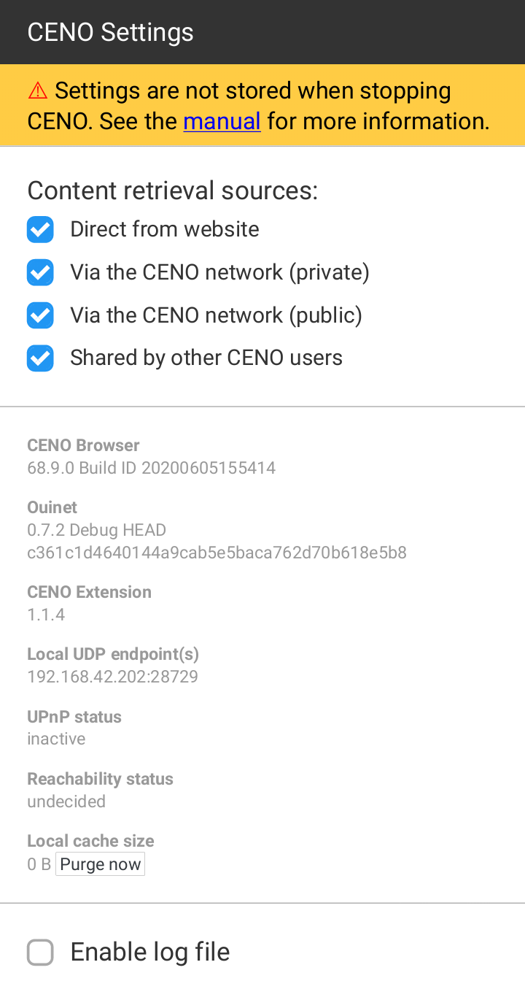
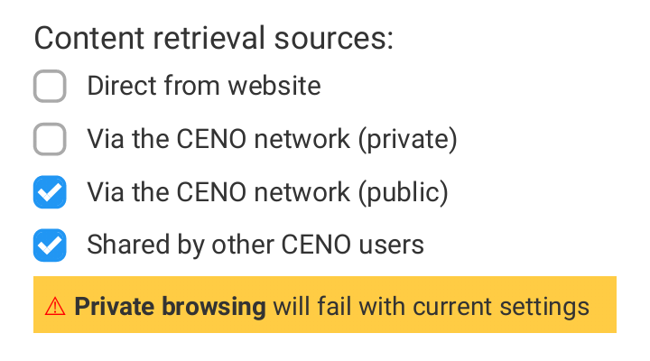

CENO settings¶
The CENO Browser allows you to change some Ouinet-specific settings and get information about your client in a simple manner. This should not be needed for normal operation, but it may be useful to help test different strategies against network interference, and to report issues with the app.
Technical note: These options are provided by the CENO Extension, a Firefox extension which comes installed out of the box with CENO and takes care of proper integration with Ouinet like enabling content injection and cache retrieval under public browsing, hinting the user about the source of the content being visualized, and warning about new versions of Ouinet.
These features are available in a page that can be accessed by choosing CENO in the app’s main menu. Please note that the menu entry may take a few seconds to pop up on app start. The page should look like this:

Choosing access mechanisms¶
The four check boxes on the top of the page selectively enable or disable the different mechanisms or sources that CENO as a Ouinet client uses to retrieve content. All of them are enabled by default.
Direct from website (or origin access) allows CENO to try to reach the origin server directly before attempting other mechanisms enabled below.
Although this mechanism works in both private and public browsing modes, content thus retrieved cannot be shared with others.
In case that getting most Web content is not particularly slow or expensive, this mechanism may be more than enough for most of the cases. However, such direct connections may be tracked by your ISP or government. Disabling this option may avoid such connections and trivial tracking to some extent (but not completely, see risks).
Also, when accessing a Web site over insecure HTTP (instead of the more secure HTTPS), a censor may intercept the connection and supply the user with a bogus site, a tampering which CENO cannot detect by itself. In such case it may help to disable this option and thus always resort to other, safer CENO mechanisms.
Via the CENO network (private) (or proxy access) allows CENO to use injectors as normal HTTP proxy servers to reach origin servers.
This mechanism only works in private browsing mode.
When accessing content over HTTPS, only origin servers will be able to decrypt traffic. When using plain HTTP, the injector may also see the unencrypted traffic (but it should still not sign or share its content with others). Other participants like bridges will never see the unencrypted traffic.
Via the CENO network (public) (or injector access) enables CENO to strip any private information from requests and send them to an injector. The injector shall get the content from an origin server, sign it and send it back to CENO, which shall start seeding it.
Other participants like bridges will not see the unencrypted traffic.
This mechanism only works in public browsing mode.
Shared by other CENO users allows CENO to try to retrieve content from the distributed cache, i.e. from other CENO and Ouinet clients seeding it.
This mechanism only works in public browsing mode.
Disabling all the mechanisms available for either public or private browsing mode will render them useless. If you establish such a configuration, a warning will be shown as depicted below.

Warning: Please note that CENO does not yet remember these settings after restarting the app. If you require some of the previous mechanisms to be off while using CENO, please remember to open the Settings page whenever you start the app and uncheck their boxes before browsing. Sorry for the inconvenience.
About your app¶
The page also provides you with some information about your CENO Browser app and Ouinet client:
- CENO Browser indicates the exact version of CENO that you are using. Please include this information in your issue reports.
- Ouinet shows the version of Ouinet backing CENO. Also include in reports.
- CENO Extension shows the version of the extension that integrates Firefox with CENO. Also include in reports.
- Local UDP endpoint(s) are the Internet addresses used by CENO to seed signed content to other clients. These are shown to help test and debug the app, and should not be generally disclosed.
- UPnP status indicates whether CENO was able to tell your router or access point to allow incoming connections towards it. Also include in reports.
- Reachability status indicates how likely it is for your device to be able to effectively seed content to other clients. Also include in reports.
- Local cache size shows an approximation of how much storage is taken by the content being seeded from your device’s local cache.
Purging the local cache¶
Next to the Local cache size value above, there is a button which allows you to stop seeding and drop all content shared by your device over Ouinet. This allows you to free up some storage space in your device while keeping other CENO settings like favorites.
If you want to clear CENO’s normal browsing cache (the one used by the browser but not shared with others) or other items like cookies, the browsing history or favorites, you should choose Settings in the app’s main menu, then Clear private data. You will be asked about which items you want to clear.
To drop everything at the same time (especially if you are in a hurry), please learn how to use the “panic button” feature described in Installing CENO.
Collecting log messages¶
At the bottom of the page there is an Enable log file check box that allows you to collect all of Ouinet’s internal messages and download them to a file. This should only be used when diagnosing some problem in CENO; just follow these steps:
- At the CENO Settings page, check Enable log file.
- Go back to browsing and do whatever actions that trigger the troublesome behavior.
- Return to the CENO Settings page and click on the Download link next to the Enable log file check box. Save the file for later use. Android may ask you at this point whether to allow CENO access to stored media: this is needed to be able to save the file.
- Uncheck Enable log file to avoid the logs from growing too large.
Now you can use the saved log file to document an issue report, but try to avoid making it public since it may contain sensitive information about your browsing.